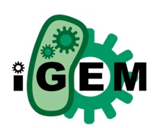
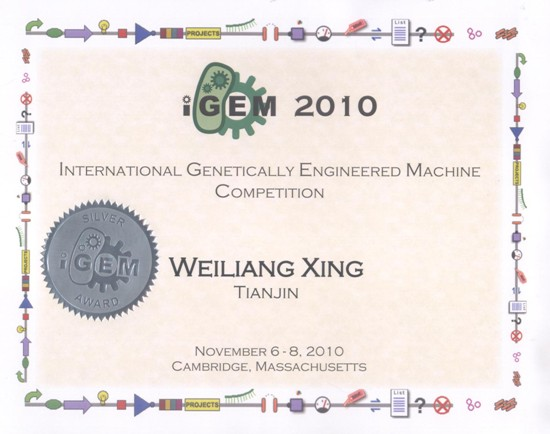

Background
IGEM (International Genetically Engineered Machine Competition) is a worldwide Synthetic Biology competition aimed at undergraduate university students (From Wikipedia, the free encyclopedia). Student teams are given a kit of biological parts at the beginning of the summer from the Registry of Standard Biological Parts. Working at their own schools over the summer, they use these parts and new parts of their own design to build biological systems and operate them in living cells. Its logo is at left. I still have one attached to my computer. And the figure below is the award.
Awards
Introduction
01/2010-11/2011 IGEM silver award 2010 Director: Ying-Jin Yuan (professor), Wen-Yu Lu (associate professor)
- Project I -- An Indefinite Genetic Counter (Independent Design)
- Project II -- Y-hunter (Collaborative Design)
- Project III -- Lignin Terminator (Collaborative Design)